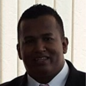

Biblioteca
La biblioteca Digital de la Corporación de Estudios Tecnológicos del Norte del Valle es un proyecto institucional Online que pretende poner a disposición de la comunidad estudiantil, de la ciudad y de la región la recopilación de material bibliográfico digital generado, recopilado y referenciado por los docentes y estudiantes, además de otros obtenidos de fuentes digitales a través de Internet, el propósito de este es servir como medio de consulta y direccionamiento a contenidos relacionados con áreas de formación , contribuyendo a enriquecer la formación educativa de los estudiantes y de los diferentes centros educativos de la ciudad y la región; sin desconocer la autoría y propiedad intelectual de dicho material.
Solicitud Prestamo De Libro
Nuestros Docentes
Isabel Rojas Rincon
